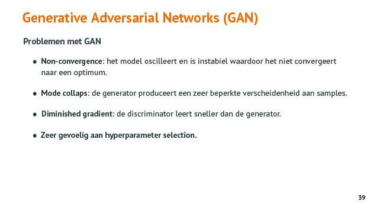

Deep generative models
Tags: AI GAN VAE
Date: 2021-05-02
Type: Cursus topic
Notities
snappen wat er gebeurt
applicaities
weten hoe je het kan implementeren
Generative models
Q: Wat is er typisch aan een generative model ?
A: Een generative model Is in staat om nieuwe data te genereren die niet in trainingset zit. Bijv gezichten te genereren die niet in trainingset zaten maar er wel sterk op lijken.
Types
Q: Welke typisch van generative models ken je ?
A: Enkele typisch van generative models zijn :
- Variational autoencoder
- Generative Adversial Networks (GAN)
Discriminative vs generative models
Discriminative zoekt scheidingslijn tss klasses
Generative wat maakt dat de features tot een bepaalde klasse (bijv auto) behoren. Probeert te bepalen hoe een auto eruit ziet.
VAE - variational autoencoder
Q: Waarvoor zou je een variational autoencoder kunnen gebruiken ?
A: Toepassingen :
- nieuwe lettertypes genereren
- nieuwe gezichten genereren
Q: Wat is het verschil tussen een Autoencoder en een Variational Autoencoder ?
A: De VAE leert geen waarden maar distributies. En dat die in staat is om data te genereren die niet in de trainingset zit maar er wel sterk op lijkt.
Autoencoder is NN die de input zo goed mogelijk probeert te reconstrueren
Latent variable ?
Per neuron krijg je een distributie en zelf al is de inschatting wat verkeerd toch is output in de buurt van de input. Wat is doel van VAE ?
Architectuur VAE
Q: Waarom moet de code layer bij een VAE ontdubbelen ?
A: De code layer moet ontdubbelen omdat er twee waarden : het gemiddelde en de standaardafwijking/variantie moet bijgehouden worden.
Op de code layer niet enkel getallen uit maar ook distributies. Deze zijn gekenmerkt door en gemiddelde en een standaardafwijking/variantie. Code layer gaat moeten verdubbelen om die waarden (distributie en variantie) te kunnen bijhouden.
Code layer 2x30
sampler = laag in NN gaat uit gaussiaanse curve samples nemen
Reconstructie gebeurt op samples
Mbv al die verschillende samples gaan er verschillende variantiees van gezichten gegenereerd worden.
De weights moeten zodanig ingesteld worden dat gelijk welke sample je neemt de output goed moet bliven lijken op de input.
Autoencoder getraind uit een groot deel van de MNIST afbeeldingen getraind
Trainen van een VAE
Latente var = gemiddelde en de spreiding
basis principe blijft : loss minimaliseren = verschil tss output en input
KL divergence = maat die aangeeft hoe sterk de twee distributies op elkaar lijken
Forceert zodat er in code layer distributies ontstaan
Je kan geen backpropagation doen doorheen een sampling node. Dit wordt opgelost door de reparameterization trick. Men gaat de sampling zelf buiten het NN trekken en de parameters signma en mu worden door het NN getraind.

Disentangled variational autoencoder
disentangled = latente variabelen leren/ontdekken die niet gekoppeld zijn aan elkaar.
Goal of disentangled features
Q: What is the goal of dientangled features ?
A: The goal of disentangled features can be most easily understood as wanting to use each dimension of your latent _z_ code to encode one and only one of these underlying independent factors of variation.
From a more information theoretic perspective, a disentangled representation is useful because when you capture the most meaningful or salient ways that observations differ from one another, those axes of difference will often be valuable for a variety of supervised task. When this is true, it allows you to use less data and a less complex model to perform a given supervised task, when you use this disentangled representation as input.
example
The goal of disentanglement has a few different motivations. In a practical sense, imagine you were learning a generative model to create pictures of people, with the ultimate goal of generative a bunch of fake people to be in the background of a video game scene. You might want to be able to tell the model, “I want to generate someone who looks like this person, but is taller”. If you’ve learned a _z_ dimension that independently encodes a person’s height, then you can modify that, keeping everything else the same. If you instead encoded height and gender in a shared dimension, changing the height while keeping all other aspects of the person constant wouldn’t be possible, since modifying the internal dimension for height would also modify gender.
Code
Autoencoder met Code layer die opgesplitst is in 2 stukken.
Sampler definieren voor decoder. Bij training KL divergions gebruiken.
GAN - generative adversarial networks
Wat is een GAN ?
2014 : Ian Goodfellow
Q: Geef een toepassing voor een GAN
A: Mogelijke toepasingen voor een GAN :
- Obv een robotfoto een foto genereren
- Obv een schets een foto van het object genereren bijv een handtas
Q: Uit welke twee deelnetwerken bestaat een GAN en wat doen ze ?
A: Een GAN bestaat uit een generator en een discriminator. Die twee deelnetwerken gaan constant met elkaar in competitie. De generator probeert zo realistisch mogelijke data te genereren om de discriminator te bedriegen en de discriminator probeert die genearator te ontmaskeren.
De generator krijgt de echte trainingset nooit te zien. De discriminator is ziet die wel wanneer die moet getraind worden om het verschil te kunnen maken tss de trainingset en de salmples van de generator.. De discriminator geeft ook hoe de generator zijn sample moet bijsturen om beter te zijn.

Architectuur GAN
Training van een GAN
Q: Hoe verloopt de ttaining van een GAN ?
A: Tijdens het trainen van een GAN wordt er gebruik gemaakt van minimax-game. Ttz de discriminator probeert zijn reward te maximaliseren (= loss minimaliseren) en de generator probeert de reward van de discriminator te minimaliseren (= loss te maximaliseren).
De eerste epoch genereert de generator samples met random inhoud (= ruis) en geeft die aan de discriminator. De weights van de generator wordt bevroren en de discriminator wordt getraind om het verschil te maken tss de trainingsamples en het resultaat van de generator. Hierbij proberen de loss zo klein mogelijk te maken. Daarna wordt de weights van de discriminator bevroren en wordt de generator getraind via backpropagation om de weights van de generator bij te stellen zodat de loss zo maximaal mogelijk is. De weights worden terug bevroren en de discriminator krijgt nieuwe samples van de generator om zijn weights bij te stellen om het onderschied tss die nieuwe samples en de trainingsamples te kunnen blijven maken.

Obv een robotfoto een foto van een gezicht genereren
Een lach overnemen van de ene foto op de andere door het verschil tss een lachende en niet lachende vrouw te nemen en dat toe te passen op een andere foto
d

Q: Welke problemen/moeilijkheden zijn er met een GAN ?
A: De problemen met een GAN zijn :
- non-convergence : het oscilleert en is instabiel waardoor het niet convergeert naar een optimum
- Diminished gradient : het is moeilijk om het zodanig in te stellen dzat zowel discriminator als generator beter worden, dat beide convergeren. Als één van de twee te snel bijleert dan kan die niets meer leren van de resultaten van de andere.
- Mode collaps : de generator doet maar één type generatie, zeer eng, geen verscheidenheid in generatir
- Zeer gevoelig aan hyperparameter selection
Q: What is the difference between VAE and a GAN ?
A: The differences between GAN and VAE are :
- A GAN's generator samples from a relatively low dimensional random variable and produces an image. Then the discriminator takes that image and predicts whether the image belongs to a target distribution or not. Once trained, I can generate a variety of images just by sampling the initial random variable and forwarding through the generator.
- A VAE's encoder takes an image from a target distribution and compresses it into a low dimensional latent space. Then the decoder's job is to take that latent space representation and reproduce the original image. Once the network is trained, I can generate latent space representations of various images, and interpolate between these before forwarding through the decoder which produces new images.